Proyecto de Inserción de equipos multidisciplinarios en unidades educativas
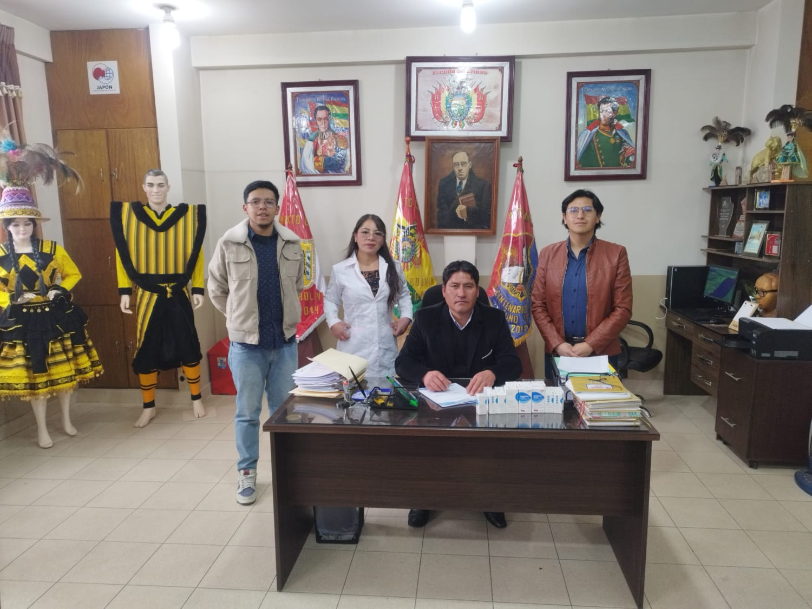
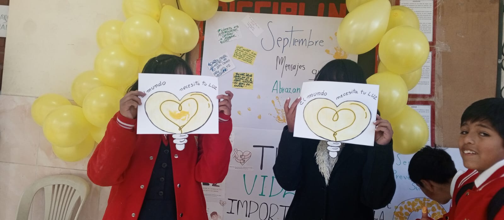
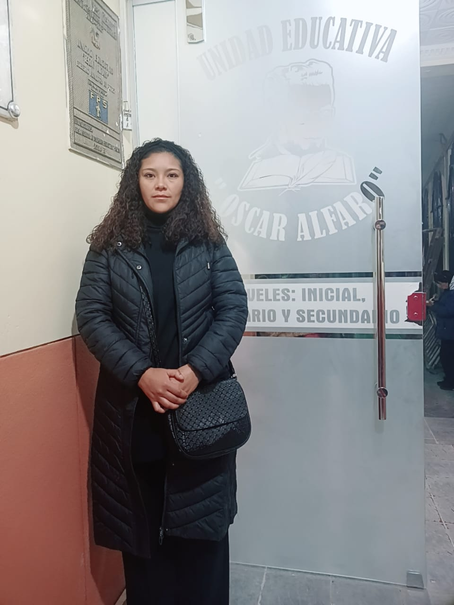
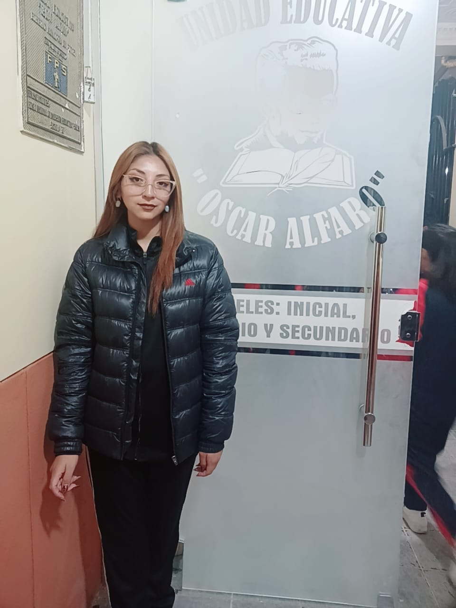
 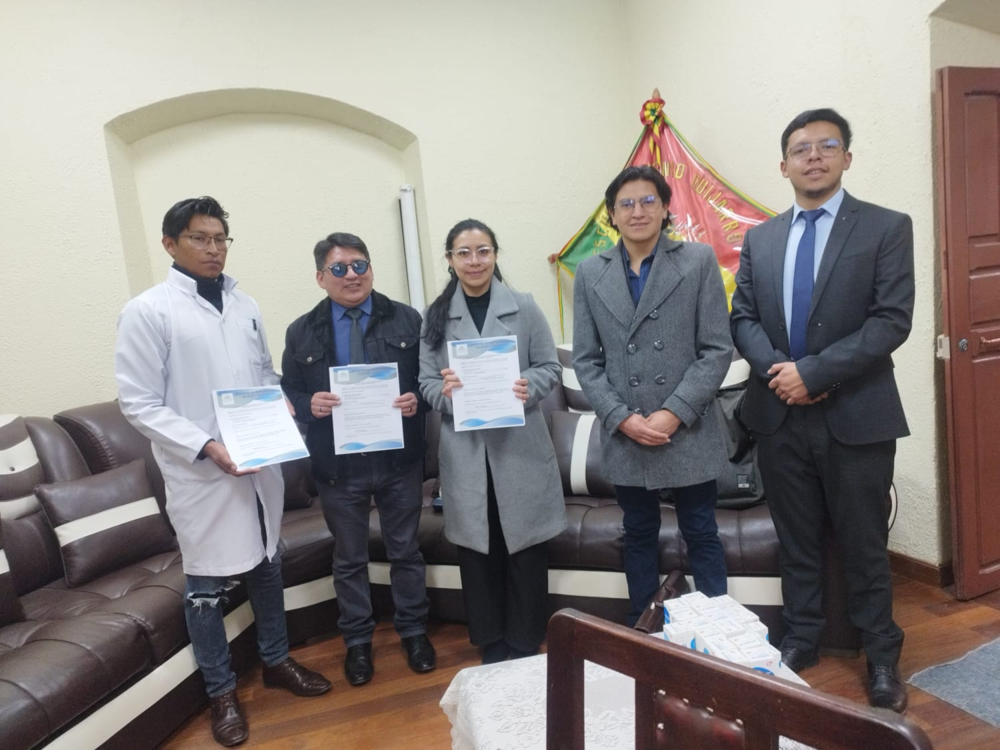
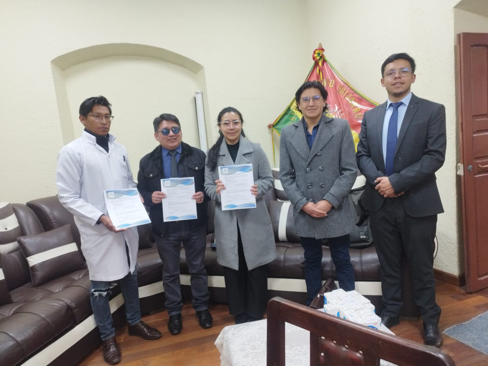
-
Tomando en cuenta que se debe realizar una atención en salud con calidad y calidez a toda la población de nuestra ciudad, sin embargo se ha identificado la vulnerabilidad de atención en salud a los estudiantes de las escuelas y colegios de nuestra ciudad y entendiendo que los estudiantes dependen del tiempo y los recursos económicos de los padres, tenemos como resultado una atención de salud demorada y relegada, motivo por el cual ASPROSAP propone insertar un equipo multidisciplinario que consta de un trabajador(a) social, un médico y un psicólogo(a) en cada unidad educativa, para atender de manera inmediata cualquier situación que pueda presentarse a nivel social, médica o psicológica que influya en el rendimiento académico o permanencia de los estudiantes en las escuelas o colegios.
Cursos prácticos de Primeros Auxilios para Maestros
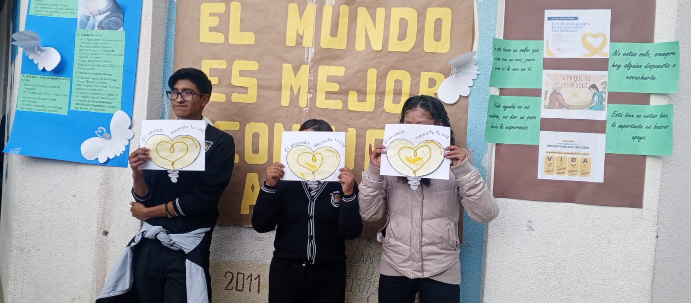
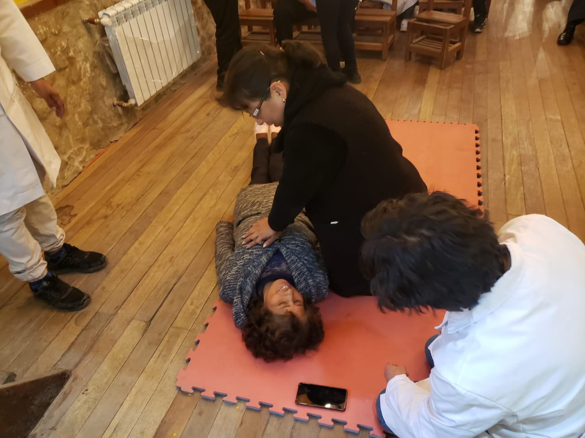
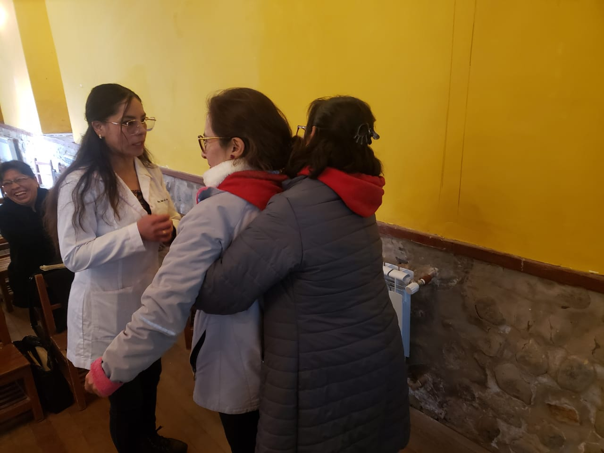
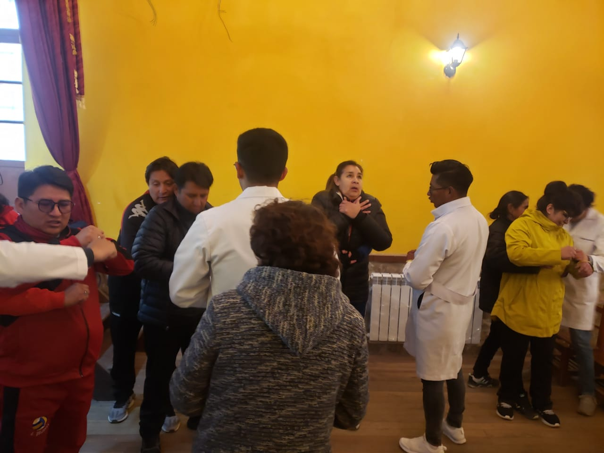
 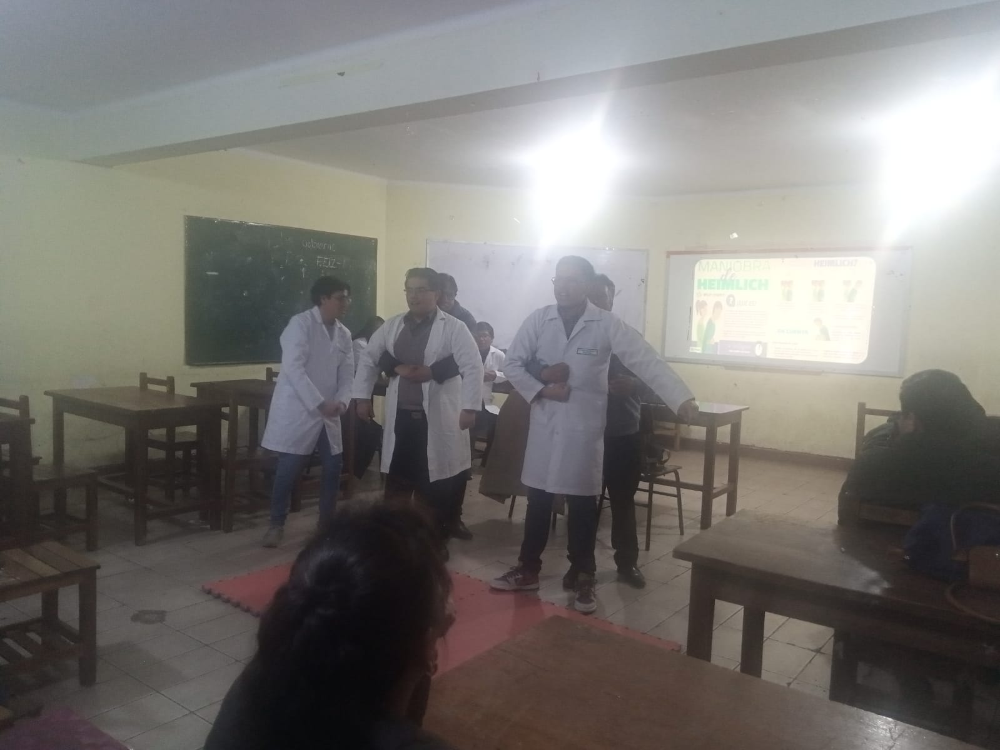
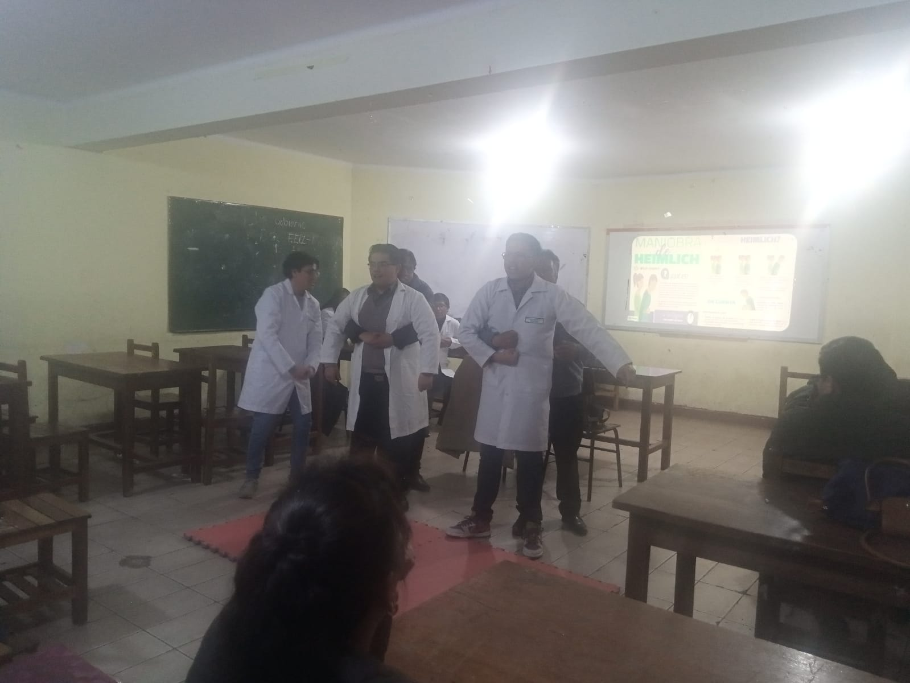
-
Al estar presentes en diferentes unidades educativas tanto fiscales como de convenio se pudo identificar que los problemas médicos son desplazados por diferentes motivos y muchas de las enfermedades desencadenan diferentes síntomas como ser: dolor abdominal, dolores de cabeza, desmayos. Así mismo se identificaron enfermedades de larga data como patologías cardíacas o enfermedades hereditarias que demuestran descompensaciones constantes dentro las aulas, por lo cual se ve la necesidad de que los maestros al estar en el aula tengan el conocimiento necesario en primeros auxilios para que puedan actuar de manera inmediata y oportuna en tanto llegara el personal médico para continuar realizando las acciones que correspondan.
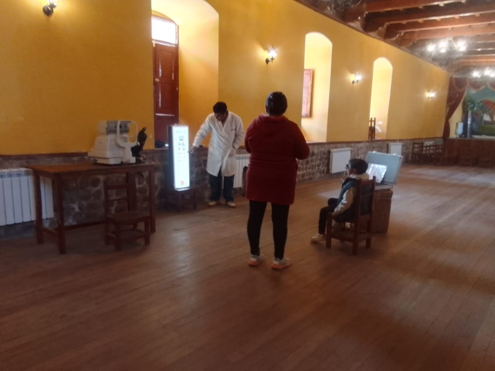
 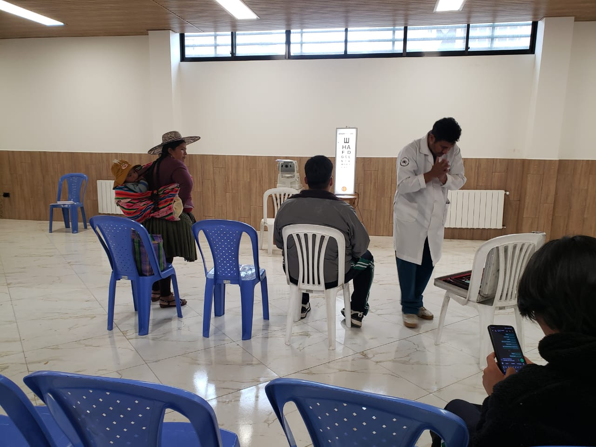
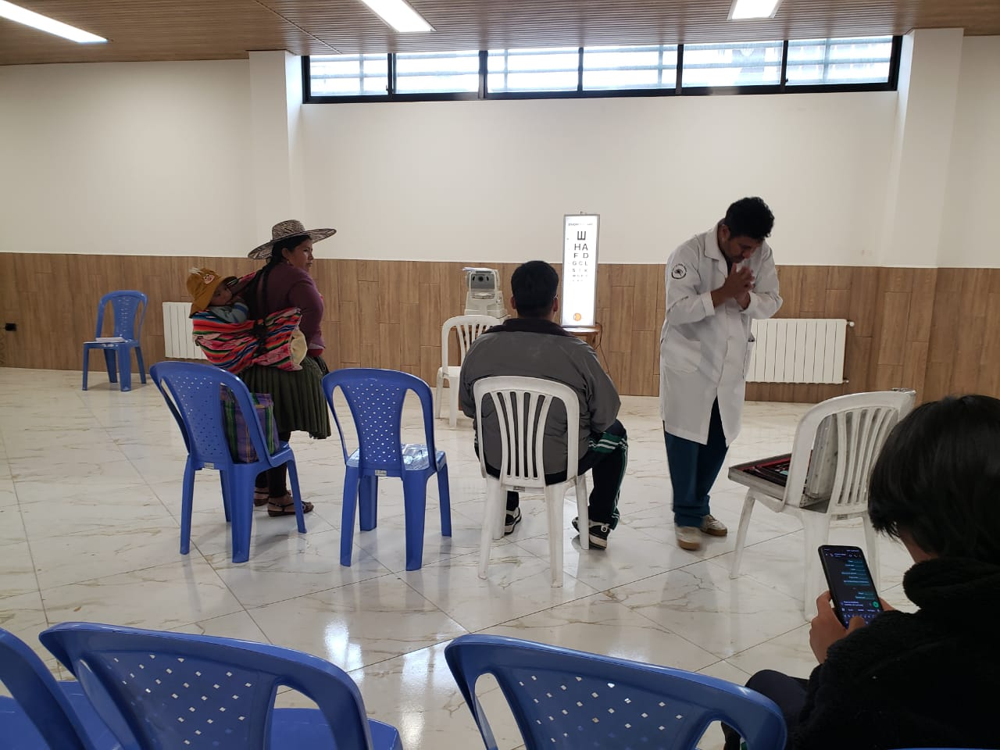
CAPAÑA DE MEDICION DE LENTES